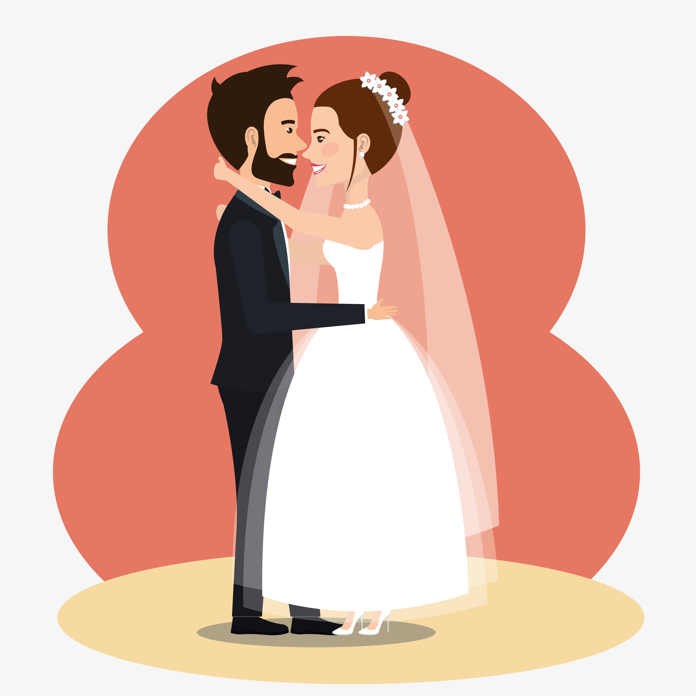
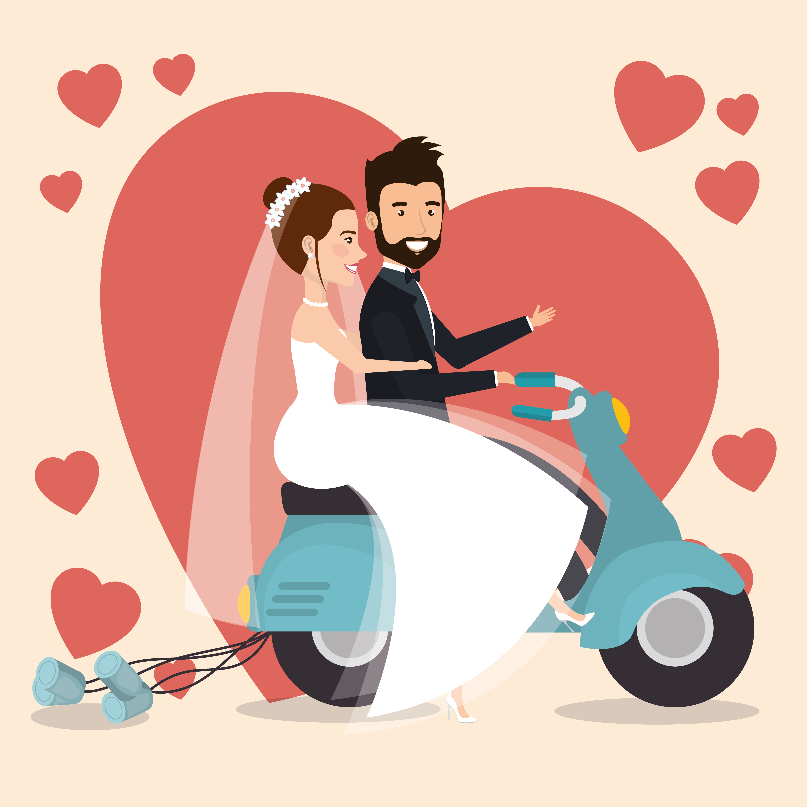

<!-- <ion-header>
  <ion-toolbar>
    <ion-title>silderpages</ion-title>
  </ion-toolbar>
</ion-header>
ion-slides {
  --bullet-background: blue;
  --bullet-background-active: yellow;
} -->

<ion-content >

  <ion-slides #slidesRef (ionSlideDidChange)="onSlideMoved($event)" [options]="slideOpts" pager=true>
    <br><br>
    <ion-slide >
      
    </ion-slide>

    <ion-slide>
      
    </ion-slide>

    <ion-slide>
      
    </ion-slide>

    <ion-slide>
      
    </ion-slide>

  </ion-slides>

  <ion-card style="box-shadow: none ;margin-bottom: -50%;
  border-radius: 55% 55% 0 0;background-color:#070E52;height: 20.5%;width: 125%;margin-left: -12%;">
  <ion-card-content>
    <!-- <ion-button  color="light" shape="round" style="--box-shadow:none;margin-left: 30%;" routerLink='/signup'>Sign up</ion-button><br> -->

    <ion-button  color="#ff6e40" style="--box-shadow:none; margin-left: 30%;margin-top: 5%;" routerLink='/signin'>Sign in</ion-button><br>
    <ion-label style="font-size: small;color:white;margin-left: 17%;margin-top: 5%;">Don't have an account?</ion-label>
    <a routerLink='/signup' style="font-size: small;">Sign Up</a>
  </ion-card-content>
</ion-card>
</ion-content>
